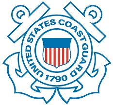

Evan King
About Me
Lorem ipusm sed vitae justo condimentum, porta lectus vitae, ultricies congue gravida diam non fringilla.
Lorem ipusm sed vitae justo condimentum, porta lectus vitae, ultricies congue gravida diam non fringilla.
Lorem ipusm sed vitae justo condimentum, porta lectus vitae, ultricies congue gravida diam non fringilla.
Lorem ipusm sed vitae justo condimentum, porta lectus vitae, ultricies congue gravida diam non fringilla.
Some of my latest projects.
| Language/Framework | Title | About |
|---|---|---|
 |
DetectingTrolls | Neural net build with Keras that uses word2vec to classify tweets as Russian troll tweets or regular tweets. |
 |
Police Militarization - Data Visualization | Data visualization created in JavaScript/D3 from public Pentagon data regarding equipment transfers. Supports mulitple views. |
|
USCG Pollution Data Visualized | Data visualization of US Coast Guard pollution data. Multiple linked views. |
 |
PreResist | Health care advocacy website written in PHP/JavaScript. It allows people with preexisting conditions to share their stories, and implements lazy image loading. The AHCA failed in Congress, so I shut down the site. |
 |
Autonima | Attempt to create a simple physics sim that resembles the human brain. Some minor progress was made, but the project is currently on hold. |
|
QuickChat | Lightweight chat app built as a proof of concept. UI built in WPF and API built using Azure. |
 |
Hermes | Pathfinding client created for WPI's Software Engineering class. Includes an implementation of A* and a UI built with Swing. |
|
Bulk Analysis Of Mortgage Data with Cluster Computing | Created a Python data analysis pipeline for large amounts of mortgage data using Spark and Azure Data Lake. |
Current: Student at Worcester Polytechnic Institute
| Company | Year | Title | About |
|---|---|---|---|
 |
2014-2018 | Worcester Polytechnic Institute | Computer Science major |
| 2017 | Software Engineering Intern - Angelo, Gordon & Co | Created a Python data analysis pipeline for large amounts of mortgage data using Spark and Azure Data Lake. | |
| 2017 | Software Engineering Intern - Vistaprint | Worked on the Manufacturing Software Production Planning team in C#. Developed a genetic algorithm to perform job scheduling. | |
|  | 2016 | Intern - United States Coast Guard | Biofouling, has significant economic and environmental effects. Robotic hull cleaners present an opportunity for significant efficiency improvements over current cleaning methods, but the industry is still in its nascency. Published in USCG Proceedings November 2017 here |
| 2016 | Cybersecurity Intern - Raytheon BBN Technologies | DARPA's VET program seeks to detect implanted malice in commodity firmware. I developed Python software for Theseus, BBN's effort. Additional information available upon request. | |
|
2014-2018 | Service Desk Specialist - WPI Service Desk | Served as frontline IT for WPI students and staff |